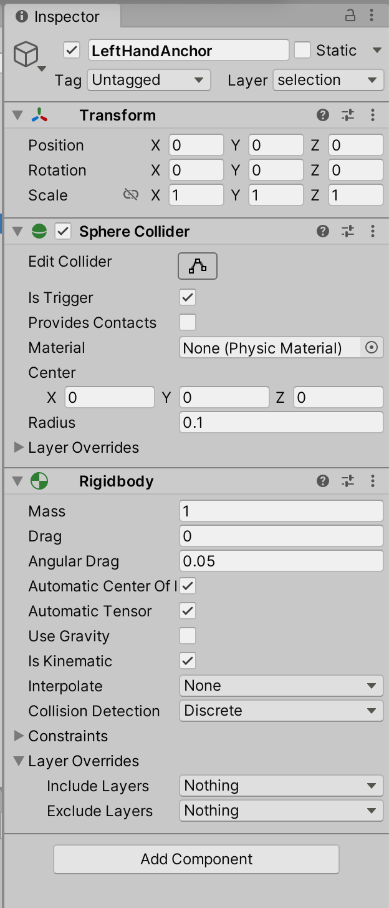
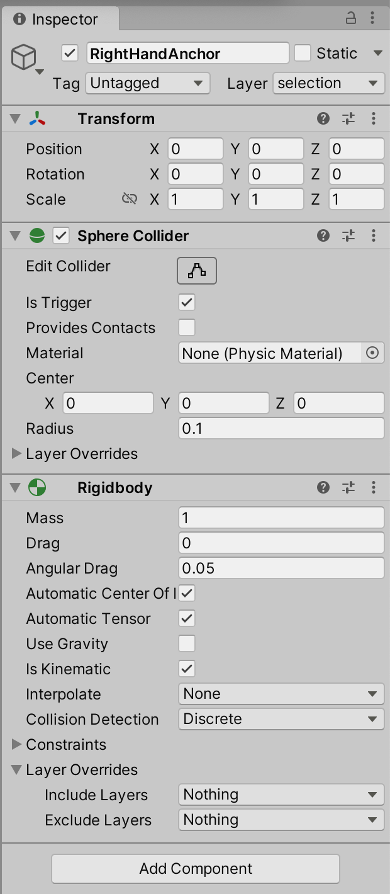
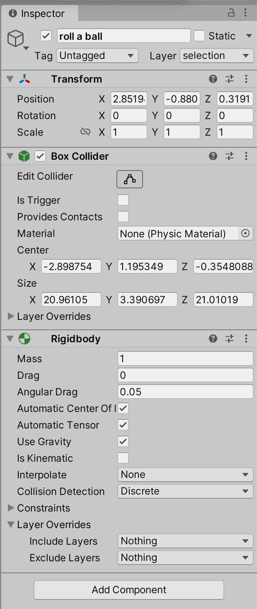
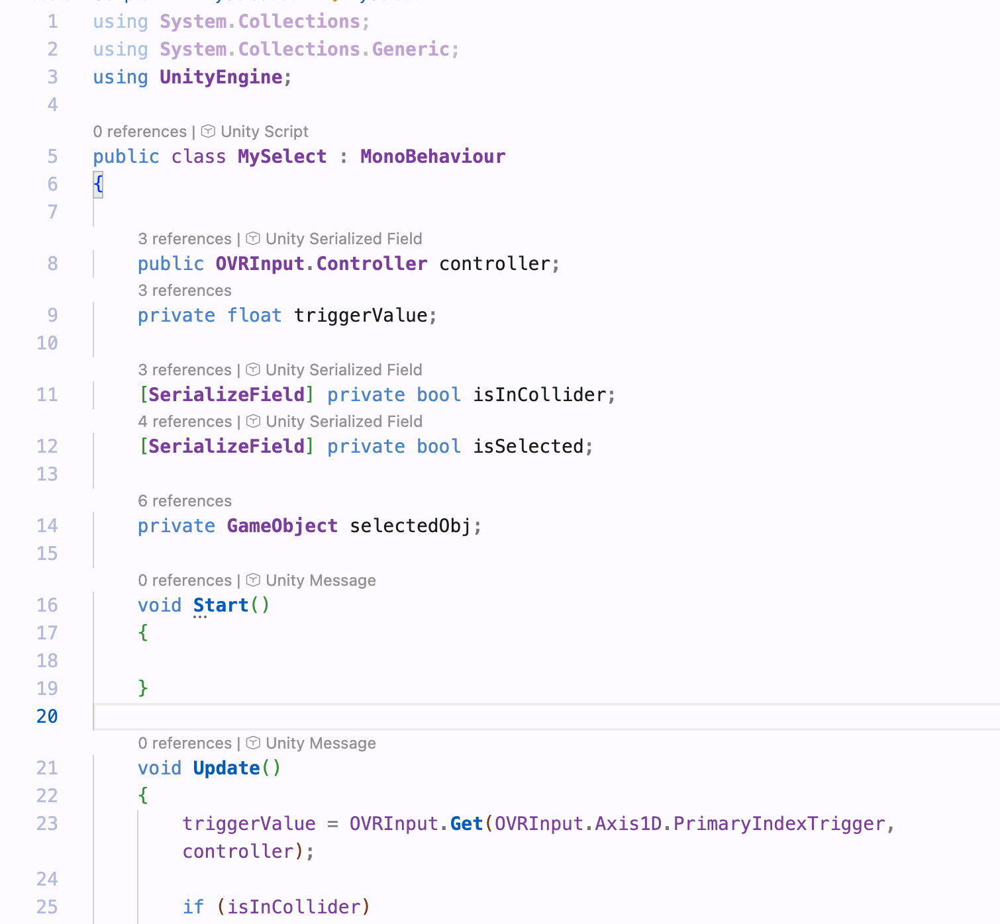
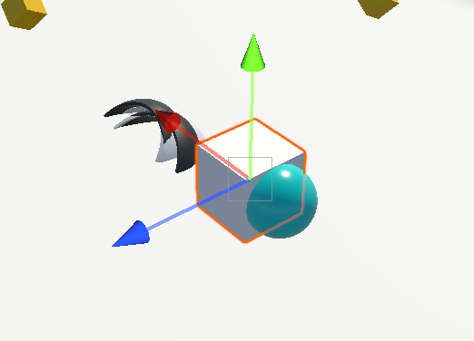
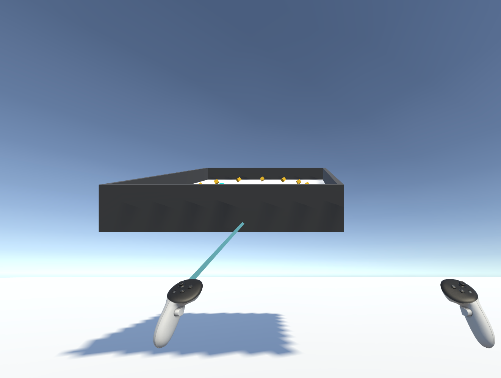

Author: Zeyu Liang
Problem: I couldn’t find any tutorial examples to import at first, which was confusing. But then I checked the README file, and it actually explained everything


Step5: setting for controllers

Problem: One major problem I encountered was that, since I’m working on a MacBook, I couldn’t run or test the VR project directly on a Meta headset.
To overcome this, I had to rely on the Meta XR Simulator for development and testing. This required configuring the project in Unity 2022, ensuring compatibility with the OpenXR plugin, and properly setting up the simulator as the active runtime. Only after completing these steps was I finally able to simulate controller and headset input on my local machine.


At first, I didn’t clearly understand why I need to use layers and how they work. I thought they were like the layers in painting software. I was also wondering: since I want to detect the collider as a whole (not just the objects inside), do I need to care about the order of layers? Later, I realized that layers are just a way to label or name objects for detection. The order doesn’t matter.
disable collision between the “Roll a ball” and Selection layers in the Physics settings

add rigidbody and set in different ways
Because I want to use the trigger function, the object must have a Rigidbody. However, if “Use Gravity” is enabled, the object will fall down automatically. So for the hand anchors, I set them to Kinematic and disable gravity, while for the “Roll a ball”, I enable gravity and disable Kinematic, so it can roll and be affected by physics.
  write the interaction script and assign it to the hand anchor

In this step I wrote a script allowing the controller to pick up and release a ball in VR. When the controller enters the ball’s collider and the player pulls the trigger, the ball becomes a child of the controller and follows its movement. When the trigger is released, the ball is detached, gravity is enabled again, and the ball continues moving based on the velocity of the hand.
Problem: I successfully implemented the direct selection feature. I can now select and grab the ball in VR. However, the original interaction between the player and the PickUp balls (such as collecting them and making them disappear) no longer works. I’ve checked many times, including colliders, trigger settings, tags, and layers, but I still don’t know what went wrong. The PickUps are not being detected by the player anymore. I even created a new cube, enabled ‘Is Trigger’, and set its tag to ‘PickUp’, but nothing shows up in the console.
I was trying to make the object’s color change when hit by the ray, but I ended up losing the material. In the end, I only managed to display the ray and use it to move the object.
